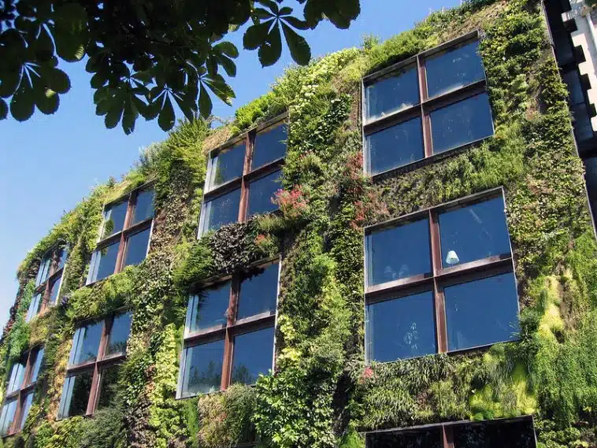

Les murs végétaux, également appelés murs verts, sont des structures verticales recouvertes de plantes. Ces installations sont utilisées pour améliorer l'esthétique, l'isolation thermique et l'air intérieur, tout en contribuant à la biodiversité urbaine.
